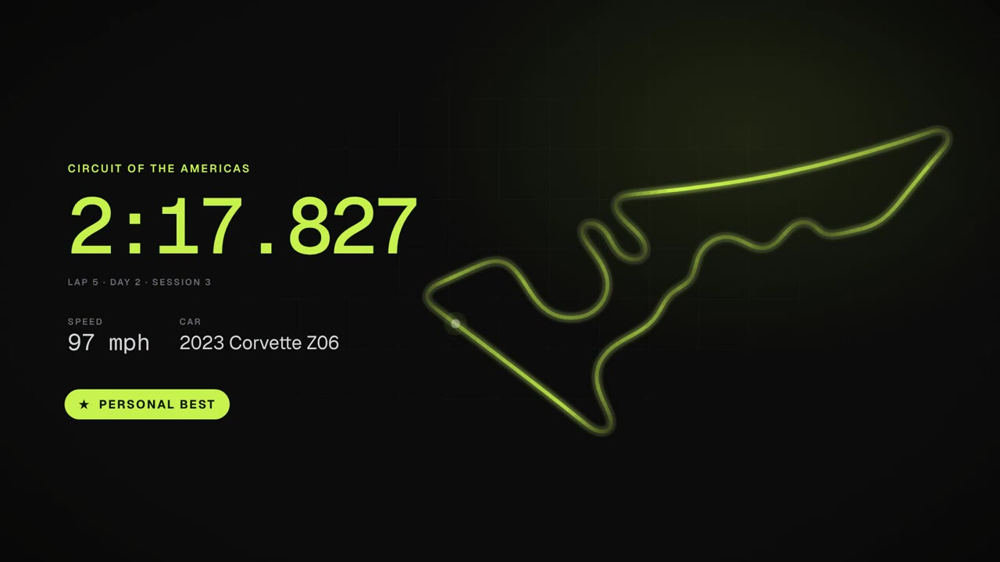

Your track days, remembered lap by lap.
Track Evolution is an HPDE / track-day logbook: events, sessions, lap times and notes per track, with progress charts that show you getting faster season over season. The logbook is free, and your data stays yours.
On the App Store for iPhone, iPad and Apple silicon Macs, and on Google Play for Android — or use it in any browser today, no install needed.

Built around how track days actually work
Tracks contain events, events contain sessions, sessions contain laps — the same shape as your weekend.
Progress charts Free
Best laps over time for every track and layout, plus lap-by-lap overlays to compare sessions — lower is faster, so improvement trends downward.
Telemetry import Free
Drop in Corvette or Cadillac PDR video, GoPro footage, Racelogic VBO or Porsche Track Precision files and get sessions with laps and racing lines — free, on the web and in the phone apps, straight from Files or Photos. Parsing happens entirely on your own device: videos are read by byte range and never uploaded. Per-lap speed, throttle and brake graphs are free too. With Pro, the same files also give you the rest of the channels — steering, RPM, lateral G and yaw — a gear ribbon with your shift points, ABS and wheelspin marks on the track map, sector splits with a theoretical best lap, a car-health strip of the slow readings (oil and tire temperatures, pressures, fuel and battery, lap by lap), and a lap-vs-lap delta chart that shows exactly where the time went — including comparing any two laps across sessions, events or seasons.
Record laps in the app Pro
The iPhone and Android apps time your laps straight from the phone's GPS — start recording, stow the phone, and pick the start/finish line on the track map when you're back in the paddock. Mount the phone in view and you get live lap timing with a delta to your best lap of the session. No camera or lap timer needed. Recording is a phone job — the Mac version of the app shows every lap you recorded but has no GPS to record with.
Lap stats that mean something Free
Best time per event, consistency as coefficient of variation, best-N averages, pace trends and warmup analysis — computed from your actual laps.
Garage & setup notebook Pro
Pads, tires and fluid tracked per car, with wear projected from your logged track time — the app tells you "front pads: about two days left" before the weekend, not after. Setup sheets per event day, diffed against your lap times.
Share links & leaderboards Free
Publish a read-only page of your stats and times under a slug you choose — links preview in chat with your name and headline bests. Notes, email, per-lap details and your garage are stripped: share the pace, keep the diary private. Opt in to per-track leaderboards to stack your best recorded lap against other drivers at the same track — only laps timed by GPS or telemetry rank, so nobody can type their way up.
Your garage Free
Every car you track gets its own page: its modifications, how many track days it has done and its best lap at each track — with a default that fills in new events automatically.
Works like an app Free
Get it from the App Store on iPhone, iPad or an Apple silicon Mac, or Google Play on Android — and any phone can add it to the home screen from the browser instead. Either way your whole logbook works offline in the paddock, and laps or notes you log without signal sync automatically when you're back online.
Season Wrapped Free
Every November, your season handed back as a story: track days, laps and track miles, the track you drove most, the time you found, your fastest lap and the hottest day you ran — swipe through the cards and finish on one made for the club group chat.
Ask your AI assistant Pro
Connect Claude, ChatGPT or another AI assistant to your logbook and ask it about your driving — where the time went against your best lap, what changed since last season, when the pads are due. It reads the same numbers the app shows and can't change a thing. How to connect, or find it in the Claude directory.
Share with a coach Pro
Send your instructor or coach a link and they can read your whole logbook — every session, the channel graphs, your racing lines and your cars — plus a driver profile with your experience, gear and goals. Read-only, never your notes or costs, and yours to revoke any time. How it works.
Yours, and private
Sign in with Google or Apple and start logging — no account setup, and the logbook itself costs nothing. Everything you record is private to you, and share pages only expose what you choose. See what's free and what's Pro.
From memory card to logbook
GPS-only recordings have no lap markers — so the import preview draws the track map you actually drove, and you click where the start/finish line is. Laps are timed on every pass, and one picked line applies to the whole batch of files.
Corvette PDR (Cosworth) MP4
Lap times recovered from beacon and odometer telemetry — reverse-engineered and validated against Cosworth Toolbox, including crossings the recorder dropped. The GPS trace, top speed, max RPM and max lateral G are decoded too, and recordings with no beacons still get lap times via the line picker or the telemetry's lap-to-lap periodicity.
Cadillac PDR MP4
The newer recorder in Cadillac's V-Series Blackwings times laps itself, so its clips arrive with the car's own lap times to the millisecond — plus the GPS trace and the same car channels and readings as a Corvette's. No line to pick.
GoPro MP4
The GPS trace from the GPMF metadata track (Hero 5 and newer), timed with the start/finish line picker.
Racelogic VBO
VBOX files and RaceChrono / TrackAddict / Harry's LapTimer / Porsche Track Precision exports — laps from the file's own start line when present, otherwise from GPS, plus the car channels the file logged.
Porsche Track Precision CSV
The app's CSV export, with the lap times Track Precision itself timed — no line to pick — plus RPM, pedals, steering, G, gear and tire pressures.
Free is the logbook. Pro is the analysis.
Everything you log is free, with no limit and no expiry — including pulling lap times out of your own video. Track Evolution Pro adds the tools that turn those lap times into a reason you got faster.
Free
$0
- Tracks, events, sessions and lap times — unlimited
- Telemetry import — lap times, the racing line, top speed, RPM and lateral G, and the per-lap speed, throttle and brake graphs out of PDR video, GoPro footage or a VBO or Track Precision file
- Best lap per track and layout, progress charts, consistency
- Per-session stats: best-N averages, pace trend, warmup
- Your garage: every car, what it has done and its best lap at each track
- What each day cost — entry, fuel, travel — on every event
- Prep checklists, share pages and per-track leaderboards
- Season Wrapped — your year as a story, every November
- Works offline on all three apps, and syncs when you're back
Pro
$1.99/month or $19.99/year
- Everything in Free
- Record laps from the phone's GPS, with live timing and a predictive delta
- The rest of the channel graphs inside an imported file — steering, RPM, lateral G and yaw — plus the gear ribbon, shift points, the car-health strip and where ABS or wheelspin hit on the track map
- Sector splits, theoretical best and lap-vs-lap deltas
- Consumable tracking: pads, tires, fluid, wear projections and cost per hour
- What it all cost, rolled up per track and per car
- The setup notebook, diffed against your lap times
- Year in review, with what the season cost per second found
- Season Wrapped's favorite-tire and top-speed cards
- Connect Claude, ChatGPT or another AI assistant to your logbook
- Share your logbook read-only with a coach or instructor
One subscription covers the iPhone app (on iPad and Apple silicon Macs too), the Android app and the web app — it follows your account, not your device. Buy it in the iPhone or Android app; cancel any time in the store.
A lapse never costs you anything you logged: your events, sessions and lap times stay, you can keep adding more, and everything reappears if you resubscribe. If you bought the app when it was a paid download, Pro is yours for life.
Start your logbook in minutes
Get the iPhone or Android app — the iPhone app also installs on iPad and Apple silicon Macs — or just sign in at trackevolution.app, and log your first event. Never driven on track? Read your first track day — what an HPDE is, what you need and where to find one.
Sign in
Sign in with your Google or Apple account at trackevolution.app — you get your own empty logbook.
Log an event
Pick the track and layout, add sessions and lap times — or just the day's best time if that's all you kept.
Import telemetry
Drop in PDR or GoPro footage, VBO or Track Precision files, and sessions with laps appear — parsed on your own device, never uploaded. On your phone, pick the clip straight from Files or Photos.
Watch the trend
Best laps per track chart downward as you get faster — and a share link publishes the pace without the diary.